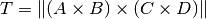
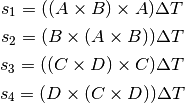
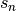

intersection¶
- sphere.great_circle_arc.intersection(A, B, C, D)[source]¶
Returns the point of intersection between two great circle arcs. The arcs are defined between the points AB and CD. Either A and B or C and D may be arrays of points, but not both.
Parameters : A, B : (x, y, z) triples or Nx3 arrays of triples
Endpoints of the first great circle arc.
C, D : (x, y, z) triples or Nx3 arrays of triples
Endpoints of the second great circle arc.
Returns : T : (x, y, z) triples or Nx3 arrays of triples
If the given arcs intersect, the intersection is returned. If the arcs do not intersect, the triple is set to all NaNs.
Notes
The basic intersection is computed using linear algebra as follows [R2]:

To determine the correct sign (i.e. hemisphere) of the intersection, the following four values are computed:

For , if all positive
 is returned as-is. If
all negative, is multiplied by
is returned as-is. If
all negative, is multiplied by  . Otherwise
the intersection does not exist and is undefined.
. Otherwise
the intersection does not exist and is undefined.References
[R2] (1, 2) Method explained in an e-mail by Roger Stafford. http://www.mathworks.com/matlabcentral/newsreader/view_thread/276271